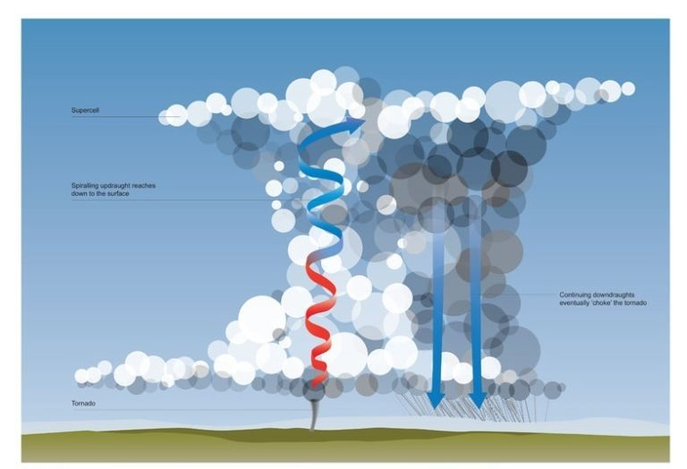
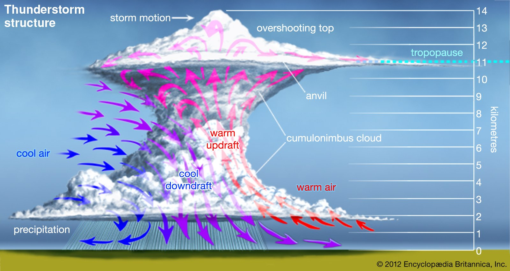

Welcome to weather for beginners! For our first part we will be talking
how tornadoes are formed. A tornado is formed once warm, moist air
collides with cold, dry air ceating an unstable enviroment within the
atmosphere. The collison of this air causes the air to rotate vertically
and possibly lead to the downward spiral that we call a tornado.

For our next topic, we will be reviewing how rain is produced.
The production of rain occurs once water vapor in the atmosphere cools
down and condenses into small particles that form clouds. Inside of
the clouds, the water droplets collide with one another until they
get too large and fall back to Earth. If below freezing, these water
droplets fall as snow.

For our next and final topic, we will be learning about how Lightning
is formed. Lightning is formed whenever there is an abundant of electrical
charges within a thunderstorm cloud. When the water droplets and ice crystals
collide within the thunderstorm cloud,they create seperate electrical
charges. The buildup of this electricity creates a strong electrical field that leads
to a sudden spark which is lightning.
